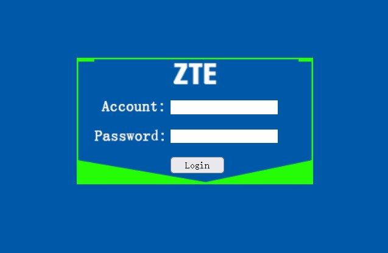
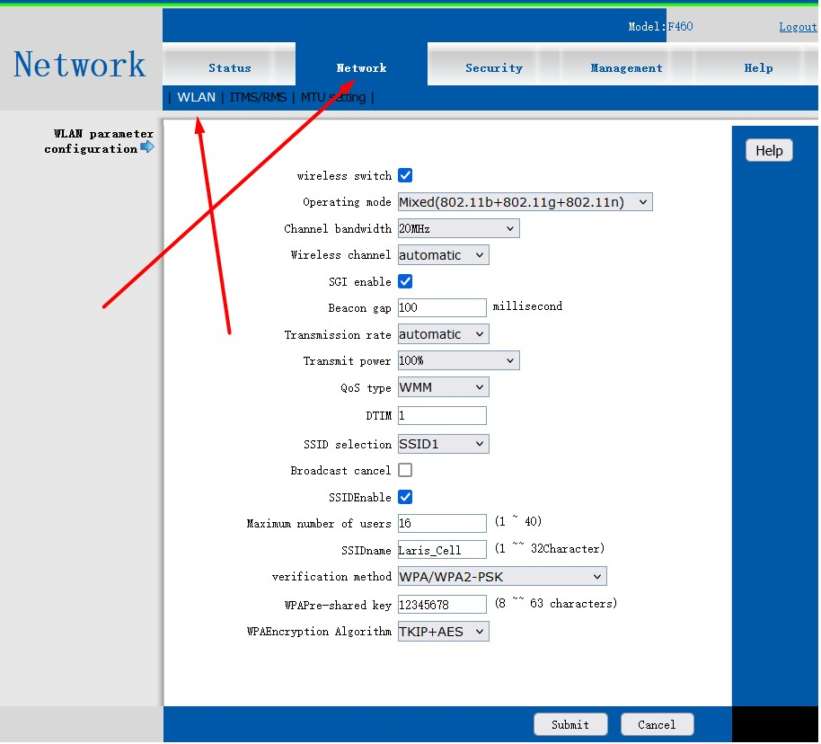
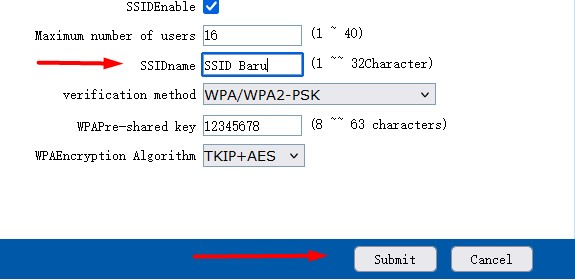
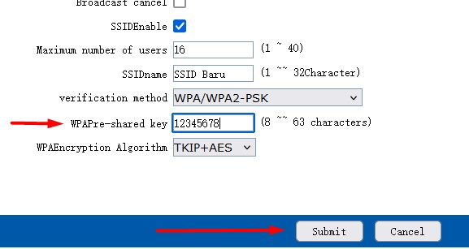

Pendahuluan
Mengganti password Wi-Fi dan SSID secara berkala penting untuk menjaga keamanan jaringan Anda. Dalam tutorial ini, Anda akan belajar cara login ke modem, mengubah SSID (nama jaringan Wi-Fi), serta mengganti password Wi-Fi Anda.
Login ke Modem/Router
Buka browser (misal: Google Chrome) dan ketik IP Address berikut di address bar, lalu tekan Enter / Cari.

Setelah itu akan muncul halaman login modem. Masukkan kredensial berikut:
- Account: user
- Password: user
Kemudian klik tombol Login.

Mengganti SSID (Nama Wi-Fi)
Setelah berhasil login, navigasikan ke menu Network, kemudian pilih submenu WLAN.

Temukan kolom SSID dan ganti teks di dalamnya dengan nama Wi-Fi baru yang Anda inginkan. Ini adalah nama yang akan terlihat oleh perangkat saat mencari jaringan.

Klik tombol SUBMIT di bagian bawah untuk menyimpan perubahan.
Mengganti Password Wi-Fi
Masih di halaman yang sama, gulir ke bawah dan temukan pengaturan keamanan:
- Temukan kolom WPAPre-shared key, hapus password lama dan ketikkan password baru Anda (minimal 8 karakter).
- Pastikan enkripsi atau tipe keamanan disetel ke TKIP+AES atau WPA2-PSK (sesuaikan dengan bawaan gambar).

Klik tombol SUBMIT untuk menyimpan konfigurasi password baru Anda.
Restart Modem (Opsional)
Beberapa tipe modem memerlukan restart agar perubahan nama dan password dapat diterapkan dengan sempurna. Anda dapat mematikan modem melalui tombol power (sakelar) di bagian belakang, tunggu 10 detik, lalu nyalakan kembali.
Konfigurasi Selesai!
Anda telah berhasil mengganti nama SSID dan password Wi-Fi. Hubungkan kembali *smartphone* atau *laptop* Anda menggunakan kata sandi yang baru.
Catatan Penting
Jika setelah mengganti password perangkat Anda tidak bisa terhubung (muncul pesan 'Incorrect Password' atau 'Gagal Terhubung'), silakan Lupakan Jaringan (Forget Network) tersebut di pengaturan Wi-Fi HP Anda terlebih dahulu, lalu coba sambungkan ulang.